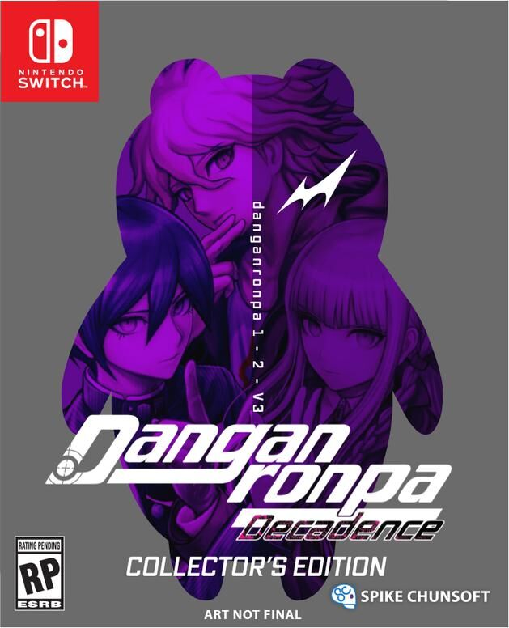

Danganronpa
 Es una franquicia de videojuegos japonesa desarrollada y publicada originalmente por Spike (luego fusionada con Chunsoft como Spike Chunsoft ) y localizadas por NIS America en 2014 y luego por Spike Chunsoft en 2020. La serie actualmente consta de tres títulos principales y un gran juego de aventuras derivado. La franquicia también incluye varios anime, manga, juegos para dispositivos móviles y novelas ligeras derivadas basadas en el universo y los personajes de Danganronpa.
Es una franquicia de videojuegos japonesa desarrollada y publicada originalmente por Spike (luego fusionada con Chunsoft como Spike Chunsoft ) y localizadas por NIS America en 2014 y luego por Spike Chunsoft en 2020. La serie actualmente consta de tres títulos principales y un gran juego de aventuras derivado. La franquicia también incluye varios anime, manga, juegos para dispositivos móviles y novelas ligeras derivadas basadas en el universo y los personajes de Danganronpa.
Desarrollo
La serie comenzó originalmente como una versión beta inédita llamada DISTRUST , escrita por Kazutaka Kodaka, producida por Yoshinori Terasawa y con arte de Rui Komatsuzaki. El juego se inspiró en películas como Saw and Cube, y el juego Illbleed de Sega Dreamcast. El nombre de la serie, Danganronpa, se compone de las palabras "bala" (弾 丸 dangan ) y "refutación" (論 破 ronpa ), ya que el juego combina disparos (con Truth Bullets) e investigación de delitos. Debido a que las novelas visuales se estaban volviendo menos populares en ese momento, y debido a que la PSP tenía un mercado competitivo muy pequeño, era necesario desarrollar elementos únicos y combinar géneros que normalmente no se mezclarían para que el juego se destacara.
Mientras que DISTRUST incluyó ejecuciones más grotescas y sangre roja realista, Danganronpa: Trigger Happy Havoc, el juego desarrollado en base al concepto de DISTRUST ,usa un estilo de arte pop más distintivo con sangre rosa fluorescente poco realista y horror que es más psicológico y tonificado. abajo. El cambio se hizo para que la audiencia no se centrara en lo grotesco de la situación, sino que pudiera centrarse en las relaciones y personalidades de los personajes y el impacto psicológico del escenario. Este cambio también significó que la clasificación de edad del juego podría reducirse, ampliando su audiencia. Contratando a Nobuyo Ōyama como la actriz de voz para Monokumafue un gran punto de inflexión en el desarrollo del juego y llevó a un récord histórico de visitas al sitio web de desarrollo del juego.Monokuma fue su primer papel como actriz de voz después de retirarse como la voz de Doraemon después de 27 años. La contratación de un elenco de voces que era muy conocido de las series de anime populares generó un gran interés de los fanáticos fuera de las personas que generalmente estarían interesadas en un juego como Danganronpa, que era el objetivo del equipo de desarrollo.
Danganronpa: Trigger Happy Havoc finalmente obtuvo una puntuación de revisión total de 83/100 en Metacritic, lo que abrió la puerta a secuelas y una adaptación de anime. El éxito ha llevado a que los juegos se localicen en varios idiomas y se publiquen en muchos países del mundo.
Historia
Danganronpa empieza con Makoto Naegi, quien comienza un nuevo año en la academia Kibougamine (la academia de la esperanza), famosa por formar a estudiantes de élite. Sin embargo un oso robot llamado Monokuma toma el control de la escuela y los atrapa dentro de ella. Monokuma les dice que para escapar, los estudiantes deben «graduarse» de la escuela asesinando a un compañero de clase de cualquier manera; si un cuerpo ha sido descubierto por 3 estudiantes, el resto de los estudiantes deberán trabajar e investigar para descubrir al culpable. Si el culpable logra engañar a todos, este podrá graduarse de la escuela y el resto de los estudiantes serán ejecutados. Sin embargo, si se descubre al culpable, entonces sólo este será ejecutado.
Series
Anime
 Danganronpa: The Animation
Danganronpa: The Animation
Danganronpa: La Animación (ダンガンロンパ: La Animación) es una serie de anime basada en la de Spike Chunsoft videojuego 's Danganronpa: Trigger Happy estragos. La serie fue producida por el estudio de animación Lerche y dirigida por Seiji Kishi, quien anteriormente era conocido por dirigir las adaptaciones de Persona 4: The Animation y Devil Survivor 2 The Animation. La serie se desarrolló durante 13 episodios desde el 4 de julio hasta el 26 de septiembre de 2013, con una versión extendida exclusiva del episodio final incluida con el lanzamiento del DVD. La serie ha sido licenciada para su lanzamiento en inglés por Funimation, que ha producido tanto una versión subtitulada como una versión doblada al inglés completo. FilmConfect también ha lanzado un doblaje en alemán completo.
Danganronpa 2.5: Nagito Komaeda y el vencedor del mundo
Danganronpa 2.5: Nagito Komaeda and the World Vanquisher (ス ー パ ー ダ ン ガ ン ロ ン パ 2.5 狛 枝 凪 斗 と 世界 の 破 壊 者 lit. Danganronpa 2.5: Nagito Komaeda and the Destroyer of the World ) es un OVA que consta de un episodio, edición limitada de Danganronpa V3: Killing Harmony lanzado exclusivamente en Japón. Está ambientado después de Danganronpa 2: Goodbye Despair y antes de Danganronpa 3: The End of Hope's Peak High School - Hope Arc, con Nagito Komaeda como protagonista y retratado como "un niño común" cuya mala suerte causa buena suerte a los demás. Debido a sufrir una muerte muy traumática en el programa, su mente creó un mundo extraño y relativamente pacífico en el que vive como mecanismo de afrontamiento. Sin embargo, todo comienza a desmoronarse después de que aparece "El Destructor del Mundo”.
Danganronpa 3: The End of Hope's Peak High School
Danganronpa 3: The End of Hope's Peak High School (ダ ン ガ ン ロ ン パ ３ –The End of 希望 ヶ 峰 学園 - Danganronpa 3 - The End of Kibōgamine Gakuen ) es una serie de anime de televisión que comenzó a transmitirse en julio de 2016, que está siendo dirigida por Seiji Kishi en Lerche.
No es una adaptación al anime de ningún juego, sino una nueva historia completamente original supervisada por el creador de la serie, Kazutaka Kodaka . El anime está destinado a ser la conclusión de la serie Hope's Peak dentro de la franquicia Danganronpa , ya que Danganronpa V3: Killing Harmony se centra en un nuevo entorno y nuevos personajes.
El anime se divide en dos arcos:
Future Arc , el primer capítulo, es una secuela de "Danganronpa 2: Goodbye Despair". Sigue aMakoto Naegi,Kyoko Kirigiri,Aoi Asahinay otros docemiembros deFuture Foundationenun último juego de asesinatos. Despair Arc , el segundo capítulo, es una precuela de toda la serie. Cuenta la historia de fondo de losRemnants of Despairy explica cómo se corrompieron. Los dos arcos se emitieron simultáneamente entre sí: Future Arc se emitió el 11 de julio y continuó emitiéndose todos los lunes, mientras que Despair Arc se emitió el 14 de julio y continúa todos los jueves. Los episodios deben verse en este orden y los dos arcos no deben verse por separado.
Hope Arc , el episodio final, es un especial que se transmite después de que terminaron los dos capítulos anteriores. Actúa como la conclusión del arco de Hope's Peak Academy. Hope Arcse emitió el 29 de septiembre.
El 23 de junio de 2016, Funimation, la compañía que subtituló y dobló el anime Danganronpa anterior , reveló que transmitirían los episodios subtitulados.
El 13 de julio de 2016, Funimation anunció que Future Arc y Despair Arc se agregarían a su alineación de Broadcast Dub de verano de 2016, que se emitirá el 10 de agosto y el 11 de agosto, respectivamente. En 2018, Cornflakes produjo una adaptación escénica de Danganronpa 3.
Mangas
Serie Hope's Peak
Serie Hope's Peak Un manga derivado llamado Danganronpa Gaiden: Killer Killer fue lanzado en Japón el 8 de marzo de 2016. Este manga de Gaiden está conectado a Danganronpa 3: The End of Hope's Peak High School . Se enfoca y se expande en la 6ta División de Future Foundation específicamente en su Oficina de Casos Especiales. Se centra en Takumi Hijirihara y Misaki Asano, que trabajan como investigadores especiales con el objetivo de combatir la desesperación, un caso a la vez.
Danganronpa 3: The End of Hope's Peak High School
Danganronpa 3: The End of Hope's Peak High School (ダ ン ガ ン ロ ン パ ３ –The End of 希望 ヶ 峰 学園 - Danganronpa 3 - The End of Kibōgamine Gakuen ) es una serie de anime de televisión que comenzó a transmitirse en julio de 2016, que está siendo dirigida por Seiji Kishi en Lerche. No es una adaptación al anime de ningún juego, sino una nueva historia completamente original supervisada por el creador de la serie, Kazutaka Kodaka. El anime está destinado a ser la conclusión de la serie Hope's Peak dentro de la franquicia Danganronpa, ya que Danganronpa V3: Killing Harmony se centra en un nuevo entorno y nuevos personajes.
El anime se divide en dos arcos:
Future Arc, el primer capítulo, es una secuela de "Danganronpa 2: Goodbye Despair". Sigue aMakoto Naegi,Kyoko Kirigiri, Aoi Asahinay otros docemiembros deFuture Foundationenun último juego de asesinatos.
Despair Arc, el segundo capítulo, es una precuela de toda la serie. Cuenta la historia de fondo de los Remnants of Despairy explica cómo se corrompieron.
Los dos arcos se emitieron simultáneamente entre sí: Future Arc se emitió el 11 de julio y continuó emitiéndose todos los lunes, mientras que Despair Arc se emitió el 14 de julio y continúa todos los jueves. Los episodios deben verse en este orden y los dos arcos no deben verse por separado.Hope Arc, el episodio final, es un especial que se transmite después de que terminaron los dos capítulos anteriores. Actúa como la conclusión del arco de Hope's Peak Academy. Hope Arcse emitió el 29 de septiembre.
El 23 de junio de 2016, Funimation, la compañía que subtituló y dobló el anime Danganronpa anterior , reveló que transmitirían los episodios subtitulados. El 13 de julio de 2016, Funimation anunció que Future Arc y Despair Arc se agregarían a su alineación de Broadcast Dub de verano de 2016, que se emitirá el 10 de agosto y el 11 de agosto, respectivamente. En 2018, Cornflakes produjo una adaptación escénica de Danganronpa 3.
.png) Ultimate Academy for Gifted Juveniles
Ultimate Academy for Gifted Juveniles
La serie Ultimate Academy for Gifted Juveniles es la segunda de dos series dentro de la franquicia Danganronpa , la primera es Hope's Peak Series. Se centra en la Academia Definitiva para Juveniles Dotados y actualmente consta de un juego. El único personaje que regresa de la serie Hope's Peak es Monokuma. La primera entrega principal de la serie Ultimate Academy for Gifted Students que se lanzará es Danganronpa V3: Killing Harmony . Se enfoca en dieciséis estudiantes que son obligados por Monokuma y los Monokubs a participar en el Semestre de Killing School.
Novelas
Danganronpa Kirigiri
Danganronpa Kirigiri (ダ ン ガ ン ロ ン パ 霧 切) es una serie de novelas ligeras escrita por Takekuni Kitayama que se centra en losmiembros de la Biblioteca de detectives , Kyoko Kirigiri y su pasado con Yui Samidare mientras explora loscasos de Duel Noir. Funcionó para 7 volúmenes, durante un período de 7 años.
La primera novela fue lanzada el 13 de septiembre de 2013 y fue publicada por Seikaisha junto con ilustraciones de Rui Komatsuzaki , siendo la fecha de lanzamiento del volumen final el 17 de junio de 2020 como parte del décimo aniversario de Danganronpa.
La novela es una precuela de Danganronpa: Trigger Happy Havoc y Danganronpa Zero ambientada años antes de los eventos que llevaron a The Tragedy durante los años de la escuela secundaria de Kyoko.
Danganronpa: Togami
Danganronpa: Togami (ダ ン ガ ン ロ ン パ 十 神), título completo Danganronpa: Togami Sekai Seifuku Misui Jōshūhan (ダ ン ガ ン ロ ン パ 十 神 世界 征服 未遂 常 習 犯), es una referencia directa, ya que no es material canónico, ya que se centra en una serie de novelas ligeras canónicas sobre Byakuya Togami y sus encuentros con Ultimate Despair en la República Checa. Hubo tres volúmenes publicados en la serie escrita por Yuya Sato.
Danganronpa Zero
Danganronpa Zero (ダ ン ガ ン ロ ン パ / ゼ ロ, estilizado como Danganronpa / Zero ) es una novela ligera que sirve como precuela de Danganronpa: Trigger Happy Havoc , que presenta eventos entre Danganronpa 3: The End of Hope's Peak High School - Despair Arc y los juegos. Hay dos volúmenes conocidos, que fueron escritos por el creador de la serie, Kazutaka Kodaka.
Explora una historia de "Y si ..." con Makoto Naegi habiendo recibido el Botón de Escape de la Máquina MonoMono al comienzo de Killing School Life, lo que le ayuda a recuperar lentamente sus recuerdos. Se desbloquea después de completar Danganronpa 2: Goodbye Despair.
Libros
Danganronpa Kodaka ~ 890 días para “Danganronpa"
Danganronpa Kodaka ~ 890 días para "Danganronpa" (ダンガンロンパ小高~ 『ダンガンロンパ』を作りながらの890日~) o Danganronpa Kodaka , para abreviar, es una antología de no ficción ( tankōbon ) escrito por Kazutaka Kodaka y con ilustraciones de Rui Komatsuzaki. El libro es una colección de artículos de Zettai Zetsubō Kodaka que se publicaron cada dos semanas en la revista Famitsu durante 2,5 años (890 días). Los artículos de Zettai Zetsubō Kodaka fueron escritos por Kodaka y cubrieron el desarrollo de la historia de la serie y comentarios sobre las últimas entradas de la franquicia, como los detalles detrás de escena de Danganronpa 3: The End of Hope's Peak High School. Episodios y Danganronpa Gaiden: asesino asesino.
Fue lanzado el 30 de marzo de 2017, con un evento especial de firma en Super Danganronpa 2: Sayonara Zetsubō Gakuen THE STAGE 2017 donde Kodaka firmó copias del libro. Quien compró la novela en el evento también obtuvo una copia de la tarjeta con una versión sin logotipo de la ilustración de la portada
Juegos
Como se juega
Los principales juegos de novelas visuales de Danganronpa se dividen en tres estilos de juego: vida diaria, investigación y prueba de clase.
- Durante School Life, el jugador explora los terrenos de la escuela, construye relaciones con los estudiantes e investiga el misterio del cautiverio de los estudiantes. Las monocoins recolectadas a lo largo de este modo de itinerancia libre se pueden gastar en regalos en la máquina MonoMono, que se pueden entregar a otros estudiantes para aumentar su amistad con el protagonista. Convertirse en amigo de otro estudiante otorgará al protagonista habilidades especiales que se pueden usar durante el modo prueba de clase.
Durante la investigación, el jugador busca pruebas relacionadas con un asesinato.
- Durante el juicio de clase, los estudiantes intentan resolver el asesinato discutiendo las pruebas que tienen. El jugador juega varios minijuegos diferentes para avanzar en la prueba. El minijuego más común, Nonstop Debate, involucra al jugador que intenta refutar las declaraciones de los estudiantes usando Truth Bullets basándose en la evidencia que recolectaron durante el modo Investigación.
A diferencia de los títulos principales de la serie, Danganronpa Another Episode: Ultra Despair Girls , es un juego de aventuras en tercera persona en el que el jugador controla a Komaru Naegi y Toko Fukawa. Komaru tiene una pistola de pirateo de megáfono con la que atacar a los enemigos, pero que también puede controlarlos, activar maquinaria y escanear el entorno en busca de pistas. Toko puede usar una pistola paralizante para convertirse temporalmente en Genocide Jack , que puede atacar a los enemigos con tijeras. Las habilidades se pueden desbloquear y equipar, lo que facilita derrotar a los enemigos.
Juegos de la serie principal
Hope's Peak
La serie Hope's Peak es una de las dos series actuales dentro de la franquicia Danganronpa , la otra es la serie Ultimate Academy for Gifted Juveniles , siendo la serie Hope's Peak la primera de las dos. Se centra en Hope's Peak Academy y consta de varios juegos, anime, manga y novelas.
.jpg) Ultimate Academy for Gifted Juveniles
Ultimate Academy for Gifted Juveniles
La serie Ultimate Academy for Gifted Juveniles es la segunda de dos series dentro de la franquicia Danganronpa , la primera es Hope's Peak Series . Se centra en la Academia Definitiva para Juveniles Dotados y actualmente consta de un juego. El único personaje que regresa de la serie Hope's Peak es Monokuma.
La primera entrega principal de la serie Ultimate Academy for Gifted Students que se lanzará es Danganronpa V3: Killing Harmony . Se enfoca en dieciséis estudiantes que son obligados por Monokuma y los Monokubs a participar en el Semestre de Killing School . Este juego fue lanzado en Japón el 12 de enero de 2017 y el 26 de septiembre de 2017 en Norteamérica.
Juegos derivados
Alter Ego
Alter Ego (aplicación) es una aplicación de sistema iOS gratuita que cuenta con un simulador de Alter Ego. Fue lanzado en Japón el 23 de mayo de 2012.
Danganronpa: Monokuma no Gyakushū
Danganronpa: Monokuma no Gyakushū (ダ ン ガ ン ロ ン パ: モ ノ ク マ の 逆襲, Danganronpa: Monokuma Strikes Back ) es un juego de bonificación donde los personajes de Danganronpa: Trigger Happy Havoc están en varios minijuegos que el jugador tiene que vencer.
Danganronpa: Unlimited Battle
Danganronpa: Unlimited Battle (ダ ン ガ ン ロ ン パ -Unlimited Battle-) fue un juego de rol coleccionable basado en cartas para dispositivos iOS y Android, desarrollado por Spike Chunsoft. El juego se lanzó el 7 de enero de 2015 en iOS y luego se lanzó en Android el 17 de abril de 2015. El juego presentaba personajes de Danganronpa: Trigger Happy Havoc y Danganronpa 2: Goodbye Despair.
El juego solo estuvo disponible durante 9 meses antes de que los servidores en línea se apagaran el 13 de noviembre de 2015 y el juego se eliminara de las tiendas de aplicaciones de iOS y Android.
Consolas de juegos
PlayStation 4 de edición limitada
Una consola PlayStation 4 de edición limitada (Playstation® 4 × ニ ュ ー ダ ン ガ ン ロ ン パ V3 Limited Edition) con Monokuma fue anunciada por Sony el 14 de diciembre de 2016 como parte de la promoción del entonces próximo Danganronpa V3: Killing Harmony . La consola se lanzó el 12 de enero de 2017 y se vendió al por menor por 33480 ¥ para la versión de 500GB y 38480 ¥ para la versión de 1TB. La consola venía en un paquete temático, con un tema de menú Danganronpa V3 preinstalado.
Danganronpa 1.2 Recarga
Dos consolas PS Vita de edición limitada (PlayStation® Vita × ダ ン ガ ン ロ ン パ 1 · 2 Limited Edition) como parte de la promoción de la próxima Danganronpa 1.2 Reload . Las consolas estuvieron disponibles para preordenar el 1 de septiembre de 2014 antes de su lanzamiento el 25 de septiembre de 2014. Estaban disponibles en negro y "blanco glaciar", y se vendieron al por menor por 20980 ¥. Cada consola presentaba grabados de Monokuma , Monomi y sprites de 16 bits de personajes de Danganronpa: Trigger Happy Havoc y Danganronpa 2: Goodbye Despair . Venía en un paquete temático de Danganronpa 1.2 Reload e incluía un tema de menú de Danganronpa 1.2 Reload preinstalado.
.png) Danganronpa V3: Killing Harmony
Danganronpa V3: Killing Harmony
Sony anunció dos consolas PS Vita de edición limitada (Playstation® Vita × ニ ュ ー ダ ン ガ ン ロ ン パ V3 Limited Edition) como parte de la promoción del entonces próximo Danganronpa V3: Killing Harmony . Las consolas se lanzaron el 12 de enero de 2017 y estaban disponibles en negro y "blanco glaciar", y se vendieron al por menor por 20980 ¥. Cada consola presentaba grabados de Monokuma y sprites de 16 bits de cada uno de los personajes principales. Viene en un empaque temático de Danganronpa e incluye un tema de menú de Danganronpa preinstalado.